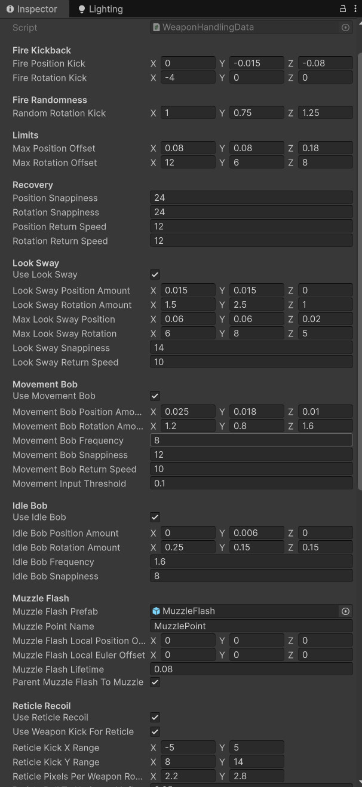
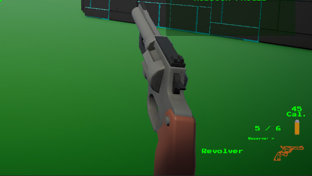
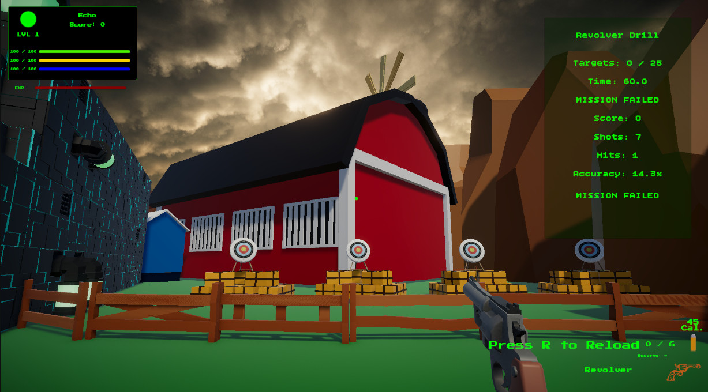
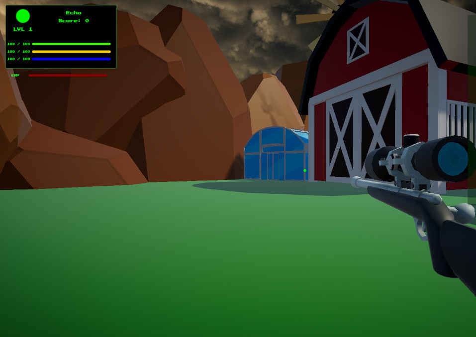
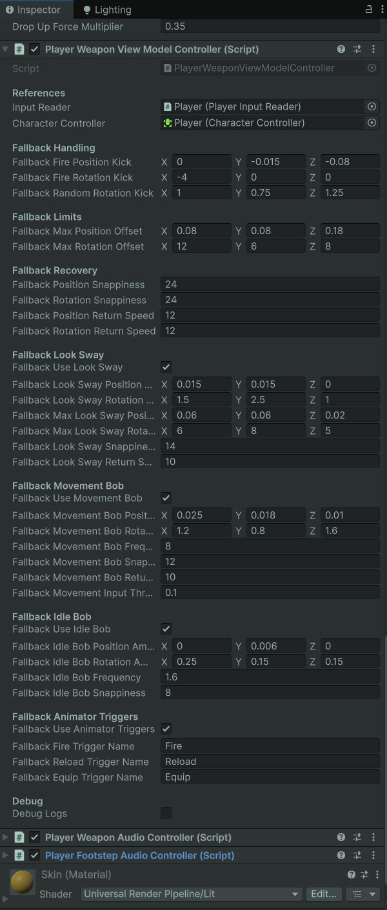

WeaponHandlingData
Weapon feel is tuned from a ScriptableObject so each weapon can have unique kick, sway, bob, reticle behavior, and flash setup.
- ScriptableObject
- Inspector Tuning
- Weapon Feel
A modular Unity weapon feel system for view model kickback, reticle recoil, muzzle flash, reload cues, dry fire feedback, movement sway, idle bob, and readable weapon response.
This system makes weapons feel responsive without making the camera feel like it got punched by a forklift.
The Weapon Handling & Feedback system gives each weapon its own feel profile through WeaponHandlingData. Instead of hardcoding pistol recoil, shotgun kick, rifle sway, reticle movement, and reload cues inside the player controller, the system stores those values in reusable ScriptableObjects.
The view model controller applies local position and rotation offsets for fire kickback, movement bob, look sway, and idle motion. The reticle controller mirrors the weapon’s feel with UI motion and scale pulses, giving the player readable feedback without forcing heavy camera recoil.
The result is a weapon feel layer that can be tuned per weapon, reused across new weapons, and expanded without bloating the firing code.
Add readable, tunable feedback to weapon use through view model motion, reticle motion, muzzle flash, reload hooks, and dry fire cues.
Fire weapon → Apply kickback → Pulse reticle → Spawn muzzle flash → Recover smoothly → Keep aim readable.
Demonstrates game feel implementation, data-driven tuning, UI feedback, and clean separation between mechanics and presentation.
Screenshot references for inspector-tuned handling values, gameplay feedback, reticle behavior, muzzle flash, and reload feel.

Weapon feel is tuned from a ScriptableObject so each weapon can have unique kick, sway, bob, reticle behavior, and flash setup.

The reticle reacts to firing without requiring aggressive camera recoil, keeping player aim readable.

Muzzle flash data controls prefab, muzzle point lookup, local offsets, lifetime, and parenting behavior.

Reload start, insert, and end hooks let weapons support full-clip reloads and one-round-at-a-time reloads.

Movement and look input create subtle view model motion so held weapons feel connected to player movement.

The controller applies layered offsets and smooth recovery while still providing safe fallback values.
The firing system sends an event, then the feel systems handle presentation like a swarm of tiny stagehands.
PlayerWeaponController validates input, ammo, reload state, fire rate, and projectile spawning.
The active weapon provides WeaponHandlingData so fire kick, reticle kick, muzzle flash, and passive motion can use weapon-specific values.
The weapon model receives local position and rotation offsets, then smoothly returns toward its base transform.
The reticle moves and pulses to sell weapon impact without dragging the player camera around.
A short-lived muzzle flash prefab appears at the weapon muzzle point, optionally parented to the muzzle.
Reload start, insert, end, and dry fire cues keep empty weapons and reload timing readable.
The system keeps weapon mechanics, weapon feel, UI feedback, VFX, and audio routing in separate lanes.
Stores fire kickback, random kick, max offsets, recovery speeds, look sway, movement bob, idle bob, muzzle flash setup, reticle recoil, passive reticle motion, and animator trigger names.
Applies kickback and passive motion to the active weapon model using local offsets, snappiness, return speeds, and safe fallbacks.
Moves and scales the reticle based on weapon fire, passive movement, look input, and idle settings.
Uses handling data to spawn muzzle flash prefabs at the active weapon muzzle point with configurable offsets and lifetime.
Supports reload start, reload insert, reload end, and dry fire triggers, allowing full reload and one-round reload weapons to feel different.
Audio moved into its own subsystem, but WeaponHandlingData still works alongside weapon audio events to create complete feedback.
The major design choice was to make the reticle and weapon feel related, but not physically identical.
Heavy camera recoil can make a weapon feel powerful, but it also changes the player’s view and can become uncomfortable in a test range built around precision. For Echo Systems Lab, the better choice was to keep the player camera readable and let the weapon model and reticle carry most of the firing response.
The reticle can kick, drift, pulse, and return to center while the weapon view model reacts independently. This sells impact without making the player feel like their whole head is attached to the recoil spring.
WeaponHandlingData also supports shared logic between weapon kick and reticle kick, so the two can feel connected instead of randomly arguing in the UI attic.
Reticle feedback shows weapon response without violently moving the player camera.
Pistols, shotguns, automatics, and future weapons can all have different kick, sway, and reload feel.
Fire feedback, passive motion, reticle motion, VFX, and reload cues combine into one readable feel layer.
These dropdowns show the data structure and view model controller behind the weapon feel layer.
//-----WeaponHandlingData.cs START-----
using UnityEngine;
[CreateAssetMenu(
fileName = "WeaponHandlingData_NewWeapon",
menuName = "Echo Systems Lab/Weapons/Weapon Handling Data")]
public class WeaponHandlingData : ScriptableObject
{
[Header("Fire Kickback")]
public Vector3 firePositionKick = new Vector3(0f, -0.015f, -0.08f);
public Vector3 fireRotationKick = new Vector3(-4f, 0f, 0f);
[Header("Fire Randomness")]
public Vector3 randomRotationKick = new Vector3(1f, 0.75f, 1.25f);
[Header("Limits")]
public Vector3 maxPositionOffset = new Vector3(0.08f, 0.08f, 0.18f);
public Vector3 maxRotationOffset = new Vector3(12f, 6f, 8f);
[Header("Recovery")]
public float positionSnappiness = 24f;
public float rotationSnappiness = 24f;
public float positionReturnSpeed = 12f;
public float rotationReturnSpeed = 12f;
[Header("Look Sway")]
public bool useLookSway = true;
public Vector3 lookSwayPositionAmount = new Vector3(0.015f, 0.015f, 0f);
public Vector3 lookSwayRotationAmount = new Vector3(1.5f, 2.5f, 1f);
public Vector3 maxLookSwayPosition = new Vector3(0.06f, 0.06f, 0.02f);
public Vector3 maxLookSwayRotation = new Vector3(6f, 8f, 5f);
public float lookSwaySnappiness = 14f;
public float lookSwayReturnSpeed = 10f;
[Header("Movement Bob")]
public bool useMovementBob = true;
public Vector3 movementBobPositionAmount = new Vector3(0.025f, 0.018f, 0.01f);
public Vector3 movementBobRotationAmount = new Vector3(1.2f, 0.8f, 1.6f);
public float movementBobFrequency = 8f;
public float movementBobSnappiness = 12f;
public float movementBobReturnSpeed = 10f;
public float movementInputThreshold = 0.1f;
[Header("Idle Bob")]
public bool useIdleBob = true;
public Vector3 idleBobPositionAmount = new Vector3(0f, 0.006f, 0f);
public Vector3 idleBobRotationAmount = new Vector3(0.25f, 0.15f, 0.15f);
public float idleBobFrequency = 1.6f;
public float idleBobSnappiness = 8f;
[Header("Muzzle Flash")]
public GameObject muzzleFlashPrefab;
public string muzzlePointName = "MuzzlePoint";
public Vector3 muzzleFlashLocalPositionOffset;
public Vector3 muzzleFlashLocalEulerOffset;
public float muzzleFlashLifetime = 0.08f;
public bool parentMuzzleFlashToMuzzle = true;
[Header("Reticle Recoil")]
public bool useReticleRecoil = true;
public bool useWeaponKickForReticle = true;
public Vector2 reticleKickXRange = new Vector2(-4f, 4f);
public Vector2 reticleKickYRange = new Vector2(6f, 12f);
public Vector2 reticlePixelsPerWeaponRotationDegree = new Vector2(2.2f, 2.8f);
public float reticleRollToHorizontalInfluence = 0.35f;
public float maxReticleKickOffset = 22f;
public float reticleKickSnappiness = 28f;
public float reticleReturnSpeed = 16f;
[Header("Reticle Passive Motion")]
public bool useReticlePassiveMotion = true;
public bool useReticleLookSway = true;
public Vector2 reticleLookSwayAmount = new Vector2(1.5f, 1.25f);
public bool useReticleMovementBob = true;
public Vector2 reticleMovementBobAmount = new Vector2(1.4f, 0.8f);
public float reticleMovementBobFrequency = 8f;
public float reticleMovementInputThreshold = 0.1f;
public bool useReticleIdleBob = true;
public Vector2 reticleIdleBobAmount = new Vector2(0f, 0.35f);
public float reticleIdleBobFrequency = 1.6f;
public float maxReticlePassiveOffset = 6f;
public float reticlePassiveSnappiness = 18f;
[Header("Reticle Pulse")]
public bool useReticleScalePulse = true;
public float reticleScaleKick = 0.12f;
public float maxReticleScaleKick = 0.25f;
public float reticleScaleSnappiness = 32f;
public float reticleScaleReturnSpeed = 18f;
[Header("Reload Animator Triggers")]
public string reloadStartTriggerName = "ReloadStart";
public string reloadInsertTriggerName = "ReloadInsert";
public string reloadEndTriggerName = "ReloadEnd";
public string dryFireTriggerName = "DryFire";
[Header("Animator Triggers")]
public bool useAnimatorTriggers = true;
public string fireTriggerName = "Fire";
public string reloadTriggerName = "Reload";
public string equipTriggerName = "Equip";
}
//-----WeaponHandlingData.cs END-----//-----PlayerWeaponViewModelController.cs START-----
using UnityEngine;
public class PlayerWeaponViewModelController : MonoBehaviour
{
[Header("Fallback Handling")]
[SerializeField] private Vector3 fallbackFirePositionKick = new Vector3(0f, -0.015f, -0.08f);
[SerializeField] private Vector3 fallbackFireRotationKick = new Vector3(-4f, 0f, 0f);
[SerializeField] private Vector3 fallbackRandomRotationKick = new Vector3(1f, 0.75f, 1.25f);
[Header("Fallback Limits")]
[SerializeField] private Vector3 fallbackMaxPositionOffset = new Vector3(0.08f, 0.08f, 0.18f);
[SerializeField] private Vector3 fallbackMaxRotationOffset = new Vector3(12f, 6f, 8f);
[Header("Fallback Recovery")]
[SerializeField] private float fallbackPositionSnappiness = 24f;
[SerializeField] private float fallbackRotationSnappiness = 24f;
[SerializeField] private float fallbackPositionReturnSpeed = 12f;
[SerializeField] private float fallbackRotationReturnSpeed = 12f;
[Header("Fallback Animator Triggers")]
[SerializeField] private bool fallbackUseAnimatorTriggers = true;
[SerializeField] private string fallbackFireTriggerName = "Fire";
[SerializeField] private string fallbackReloadTriggerName = "Reload";
[SerializeField] private string fallbackEquipTriggerName = "Equip";
[Header("Debug")]
[SerializeField] private bool debugLogs;
private Transform activeViewModel;
private Animator activeAnimator;
private WeaponHandlingData activeHandlingData;
private Vector3 baseLocalPosition;
private Vector3 baseLocalEulerAngles;
private Vector3 baseLocalScale;
private Vector3 targetPositionOffset;
private Vector3 targetRotationOffset;
private Vector3 currentPositionOffset;
private Vector3 currentRotationOffset;
private void Update()
{
if (activeViewModel == null)
return;
float deltaTime = Time.deltaTime;
targetPositionOffset = Vector3.Lerp(
targetPositionOffset,
Vector3.zero,
GetPositionReturnSpeed() * deltaTime);
targetRotationOffset = Vector3.Lerp(
targetRotationOffset,
Vector3.zero,
GetRotationReturnSpeed() * deltaTime);
currentPositionOffset = Vector3.Lerp(
currentPositionOffset,
targetPositionOffset,
GetPositionSnappiness() * deltaTime);
currentRotationOffset = Vector3.Lerp(
currentRotationOffset,
targetRotationOffset,
GetRotationSnappiness() * deltaTime);
ApplyViewModelTransform();
}
public void SetActiveViewModel(Transform viewModelTransform, WeaponHandlingData handlingData)
{
activeViewModel = viewModelTransform;
activeHandlingData = handlingData;
activeAnimator = null;
targetPositionOffset = Vector3.zero;
targetRotationOffset = Vector3.zero;
currentPositionOffset = Vector3.zero;
currentRotationOffset = Vector3.zero;
if (activeViewModel == null)
return;
baseLocalPosition = activeViewModel.localPosition;
baseLocalEulerAngles = activeViewModel.localEulerAngles;
baseLocalScale = activeViewModel.localScale;
activeAnimator = activeViewModel.GetComponentInChildren<Animator>(true);
ApplyViewModelTransform();
PlayEquipFeedback();
if (debugLogs)
Debug.Log($"View model controller linked to: {activeViewModel.name}");
}
public void ClearActiveViewModel()
{
activeViewModel = null;
activeAnimator = null;
activeHandlingData = null;
targetPositionOffset = Vector3.zero;
targetRotationOffset = Vector3.zero;
currentPositionOffset = Vector3.zero;
currentRotationOffset = Vector3.zero;
}
public void PlayFireFeedback()
{
AddPositionKick(GetFirePositionKick());
AddRotationKick(GetFireRotationKick() + GetRandomRotationKick());
TrySetAnimatorTrigger(GetFireTriggerName());
if (debugLogs)
Debug.Log("View model fire feedback played.");
}
public void PlayReloadFeedback()
{
TrySetAnimatorTrigger(GetReloadTriggerName());
if (debugLogs)
Debug.Log("View model reload feedback played.");
}
public void PlayEquipFeedback()
{
TrySetAnimatorTrigger(GetEquipTriggerName());
if (debugLogs)
Debug.Log("View model equip feedback played.");
}
private void AddPositionKick(Vector3 kick)
{
targetPositionOffset += kick;
targetPositionOffset = ClampVector(targetPositionOffset, GetMaxPositionOffset());
}
private void AddRotationKick(Vector3 kick)
{
targetRotationOffset += kick;
targetRotationOffset = ClampVector(targetRotationOffset, GetMaxRotationOffset());
}
private Vector3 ClampVector(Vector3 value, Vector3 maxAbs)
{
value.x = Mathf.Clamp(value.x, -Mathf.Abs(maxAbs.x), Mathf.Abs(maxAbs.x));
value.y = Mathf.Clamp(value.y, -Mathf.Abs(maxAbs.y), Mathf.Abs(maxAbs.y));
value.z = Mathf.Clamp(value.z, -Mathf.Abs(maxAbs.z), Mathf.Abs(maxAbs.z));
return value;
}
private Vector3 GetRandomRotationKick()
{
Vector3 random = GetRandomRotationKickRange();
return new Vector3(
Random.Range(-random.x, random.x),
Random.Range(-random.y, random.y),
Random.Range(-random.z, random.z));
}
private void ApplyViewModelTransform()
{
if (activeViewModel == null)
return;
activeViewModel.localPosition = baseLocalPosition + currentPositionOffset;
activeViewModel.localRotation = Quaternion.Euler(baseLocalEulerAngles + currentRotationOffset);
activeViewModel.localScale = baseLocalScale;
}
private void TrySetAnimatorTrigger(string triggerName)
{
if (!ShouldUseAnimatorTriggers())
return;
if (activeAnimator == null)
return;
if (string.IsNullOrWhiteSpace(triggerName))
return;
activeAnimator.SetTrigger(triggerName);
}
private Vector3 GetFirePositionKick()
{
return activeHandlingData != null
? activeHandlingData.firePositionKick
: fallbackFirePositionKick;
}
private Vector3 GetFireRotationKick()
{
return activeHandlingData != null
? activeHandlingData.fireRotationKick
: fallbackFireRotationKick;
}
private Vector3 GetRandomRotationKickRange()
{
return activeHandlingData != null
? activeHandlingData.randomRotationKick
: fallbackRandomRotationKick;
}
private Vector3 GetMaxPositionOffset()
{
return activeHandlingData != null
? activeHandlingData.maxPositionOffset
: fallbackMaxPositionOffset;
}
private Vector3 GetMaxRotationOffset()
{
return activeHandlingData != null
? activeHandlingData.maxRotationOffset
: fallbackMaxRotationOffset;
}
private float GetPositionSnappiness()
{
return activeHandlingData != null
? Mathf.Max(0.01f, activeHandlingData.positionSnappiness)
: Mathf.Max(0.01f, fallbackPositionSnappiness);
}
private float GetRotationSnappiness()
{
return activeHandlingData != null
? Mathf.Max(0.01f, activeHandlingData.rotationSnappiness)
: Mathf.Max(0.01f, fallbackRotationSnappiness);
}
private float GetPositionReturnSpeed()
{
return activeHandlingData != null
? Mathf.Max(0.01f, activeHandlingData.positionReturnSpeed)
: Mathf.Max(0.01f, fallbackPositionReturnSpeed);
}
private float GetRotationReturnSpeed()
{
return activeHandlingData != null
? Mathf.Max(0.01f, activeHandlingData.rotationReturnSpeed)
: Mathf.Max(0.01f, fallbackRotationReturnSpeed);
}
private bool ShouldUseAnimatorTriggers()
{
return activeHandlingData != null
? activeHandlingData.useAnimatorTriggers
: fallbackUseAnimatorTriggers;
}
private string GetFireTriggerName()
{
return activeHandlingData != null
? activeHandlingData.fireTriggerName
: fallbackFireTriggerName;
}
private string GetReloadTriggerName()
{
return activeHandlingData != null
? activeHandlingData.reloadTriggerName
: fallbackReloadTriggerName;
}
private string GetEquipTriggerName()
{
return activeHandlingData != null
? activeHandlingData.equipTriggerName
: fallbackEquipTriggerName;
}
}
//-----PlayerWeaponViewModelController.cs END-----This system turned weapon feel from scattered controller logic into a tuning layer.
The first firing loop worked mechanically, but weapons still needed physical response. Adding kickback directly to the weapon controller would have worked for one weapon, but it would have become sticky code syrup once multiple weapons entered the project.
By moving feel values into WeaponHandlingData, each weapon can define how heavy, snappy, twitchy, stable, or floaty it should feel. The pistol can feel crisp, the shotgun can shove harder, and automatics can recover differently.
The reticle also became part of the feedback stack. Instead of relying only on the weapon mesh, the UI now helps communicate fire impact, movement, and aim stability.
Firing worked, but weapons lacked layered visual response and per-weapon feel tuning.
Weapons use data-driven kick, reticle reaction, muzzle flash, sway, bob, and reload feedback.
New weapons can feel distinct through inspector values instead of controller rewrites.
This system shows practical game feel work layered on top of existing gameplay mechanics.
Weapon Handling & Feedback demonstrates how I approach responsiveness and readability. The system does not just make weapons fire. It makes weapon use communicate impact, timing, reload state, movement, and player control.
It also shows that feedback systems benefit from separation. Firing, view model feedback, reticle feedback, muzzle flash, reload hooks, and audio events can work together without collapsing into one enormous player script.
For portfolio purposes, this is a strong example of turning mechanical functionality into a polished, tunable player-facing system.
Weapon feedback sits between weapon data, target range gameplay, audio routing, and player input.
Covers WeaponData, owned weapons, active weapon state, ammo data, loadout cycling, and trial restrictions.
Covers target objectives, scoring, hit tracking, accuracy, completion state, and mission flow.
Covers reusable audio events, weapon audio data, mixer routing, music, ambience, footsteps, UI sounds, and settings.